Root-Securty root-secyrity
Lock-screen engineer
This page mirrors how github.com renders the README at ~940px of content width.
If it reads well here, it reads well on the profile.


Lock skins, bar plugins and terminal tools for the Ryoku desktop.
Now — qylock lock skins, the window-stash bar plugin, and
routwatch for Huawei CPEs.
Runs on — Ryoku (Arch Linux) · Hyprland · Quickshell · Rust · QML
Elsewhere — all repositories